{kind=link}
{kind=link}
9-to-1-r0-Q4-01
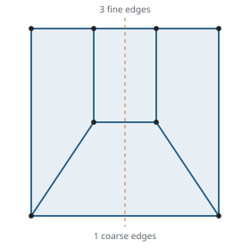
2 vertices per vertical edge · minimum corner mean ratio 0.490
Axial: complete through 28
Diagonal: complete through 28, no candidates
Transitions from a 3×3 quad grid to one quad (9 → 1), from a 4×4 grid to a 2×2 grid (16 → 4), and from a 5×5 grid to either a 3×3 grid (25 → 9) or one quad (25 → 1). The fine grid is on top and the coarse grid below; the same connectivity can be used in either direction.
12 connectivities with selectable height-optimized and fixed-height embeddings, and 35 enumerated side-wall patterns. Every displayed embedding has strictly positive Jacobian determinants throughout its cells.
Meshes and side walls (.zip) · Side-wall patterns · Quality comparison (.csv)

F25-1-H37-02 gives a direct 25 → 1 transition with 37 cells and seven quads per wall. Three distinct 37-cell fillings are displayed, together with three 38-cell alternatives on an eight-quad wall.
Layer height is optimized independently for each connectivity. Height/width is the full layer height divided by the footprint width; 1 is the cube reference. Every mesh uses starts 0.125, 0.25, 0.5, 1, 2, and 4, with the height variable bounded to [0.05, 4]. HexOpt optimizes its scaled-Jacobian threshold. The table selects the best dense sampled SJ and, separately, the lowest worst condition number among the same certified trials, including simply scaled reference meshes. The second selection is not a direct condition-number optimization. These are local optimization results, not proven optima.
Higher SJ is better; lower condition number is better. SJ measures angular distortion and can miss stretching, so both are reported. Each column group may select a different height and interior embedding. Comparison CSV · Optimization records.
| Mesh | Hexes | Best sampled SJ | Lowest condition among trials | ||||||
|---|---|---|---|---|---|---|---|---|---|
| Height/width | Min. SJ ↑ | Max. condition ↓ | Mesh | Height/width | Min. SJ ↑ | Max. condition ↓ | Mesh | ||
| F9-1-H13 | 13 | 0.654 | 0.490 | 55.65 | View | 2.000 | 0.100 | 9.75 | View |
| F9-1-H14 | 14 | 1.254 | 0.490 | 62.67 | View | 1.269 | 0.490 | 59.33 | View |
| F16-4-H28 | 28 | 0.499 | 0.490 | 5.33 | View | 0.499 | 0.490 | 5.33 | View |
| F16-4-H32 | 32 | 0.911 | 0.560 | 5.36 | View | 1.000 | 0.511 | 4.79 | View |
| F25-9-H33 | 33 | 0.287 | 0.720 | 9.31 | View | 0.297 | 0.720 | 8.70 | View |
| F16-4-H34 | 34 | 1.459 | 0.420 | 3267.18 | View | 0.386 | 0.175 | 990.92 | View |
| F25-1-H37-01 | 37 | 0.793 | 0.320 | 210.77 | View | 2.000 | 0.069 | 14.51 | View |
| F25-1-H37-02 | 37 | 0.635 | 0.400 | 33.93 | View | 1.000 | 0.228 | 10.95 | View |
| F25-1-H37-03 | 37 | 0.650 | 0.410 | 131.50 | View | 1.000 | 0.228 | 12.39 | View |
| F25-1-H38-01 | 38 | 1.884 | 0.250 | 51.93 | View | 1.884 | 0.250 | 51.93 | View |
| F25-1-H38-02 | 38 | 1.285 | 0.410 | 121.40 | View | 1.260 | 0.410 | 19.48 | View |
| F25-1-H38-03 | 38 | 1.305 | 0.410 | 255.94 | View | 4.000 | 0.069 | 61.56 | View |
Higher minimum sampled SJ is better; lower maximum condition number is better. The 14-cell 9 → 1 mesh improves SJ over the 13-cell mesh but has a worse condition number. The 34-cell 16 → 4 mesh is included for its seven-quad side wall; the 32-cell mesh has better quality and fewer cells, with eight quads per wall.
For 25 → 1, the 38-cell variants improve minimum SJ over the 37-cell variants but have worse maximum condition numbers. Strict positivity alone does not imply good element quality.
| Mesh | Transition | Hexes | Quads / wall | Min. SJ ↑ | Max. condition ↓ | Downloads |
|---|---|---|---|---|---|---|
| F9-1-H13 | 9 → 1 | 13 | 4 | 0.301 | 10.14 | Mesh · JSON |
| F9-1-H14 | 9 → 1 | 14 | 5 | 0.470 | 64.64 | Mesh · JSON |
| F16-4-H28 | 16 → 4 | 28 | 6 | 0.200 | 7.12 | Mesh · JSON |
| F16-4-H32 | 16 → 4 | 32 | 8 | 0.511 | 4.79 | Mesh · JSON |
| F25-9-H33 | 25 → 9 | 33 | 6 | 0.260 | 4012.47 | Mesh · JSON |
| F16-4-H34 | 16 → 4 | 34 | 7 | 0.390 | 3904.06 | Mesh · JSON |
| F25-1-H37-01 | 25 → 1 | 37 | 7 | 0.220 | 15.52 | Mesh · JSON |
| F25-1-H37-02 | 25 → 1 | 37 | 7 | 0.228 | 10.95 | Mesh · JSON |
| F25-1-H37-03 | 25 → 1 | 37 | 7 | 0.228 | 12.39 | Mesh · JSON |
| F25-1-H38-01 | 25 → 1 | 38 | 8 | 0.230 | 98.22 | Mesh · JSON |
| F25-1-H38-02 | 25 → 1 | 38 | 8 | 0.349 | 2338.28 | Mesh · JSON |
| F25-1-H38-03 | 25 → 1 | 38 | 8 | 0.340 | 130.21 | Mesh · JSON |
F16-4-H28 divides along its axial mirrors into four seven-cell quarters, consistent with the four-block face transition in Schneiders’ figures 16a/b. This is the closest displayed match to that construction.
F9-1-H13 is comparable to the transition beneath the regular fine-grid layer in figure 10. The paper calls this 3-refinement by its edge ratio; the collection uses 9 → 1 to count quads on the two caps. These are figure-based comparisons; exact connectivity equivalence to a published mesh file has not been checked. The displayed coordinates are optimized here.
Quality is sampled on 21³ points per cell; exact positivity is certified separately. Drag to rotate, scroll to zoom, and use shrink to inspect cell interfaces. Quality definitions.
Loading refinement meshes…
All 35 patterns from the 2D search, grouped by transition and quad count. Within each group, the best minimum corner mean ratio comes first. The score is 2 det(u,v) / (|u|² + |v|²) for outgoing corner edges u and v, minimized over all corners; it penalizes skew and stretching. These patterns use the square side walls of the height/width = 1 reference; other heights scale their vertical coordinates. A valid wall alone does not establish a valid volume filling.

2 vertices per vertical edge · minimum corner mean ratio 0.490
Axial: complete through 28
Diagonal: complete through 28, no candidates
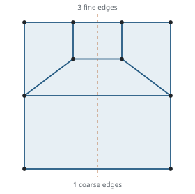
3 vertices per vertical edge · minimum corner mean ratio 0.426
Axial: complete through 28
Diagonal: complete through 28, no candidates
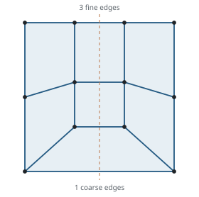
3 vertices per vertical edge · minimum corner mean ratio 0.500
No certified volume mesh in this collection.
Axial: complete through 28
Diagonal: complete through 28, no candidates
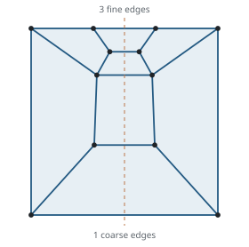
2 vertices per vertical edge · minimum corner mean ratio 0.539
No certified volume mesh in this collection.
Axial: complete through 28, no candidates
Diagonal: complete through 28, no candidates
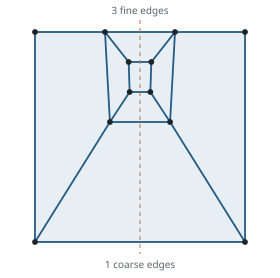
2 vertices per vertical edge · minimum corner mean ratio 0.408
No certified volume mesh in this collection.
Axial: complete through 28, no candidates
Diagonal: complete through 28, no candidates
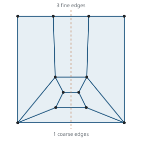
2 vertices per vertical edge · minimum corner mean ratio 0.249
No certified volume mesh in this collection.
Axial: complete through 28
Diagonal: complete through 28, no candidates
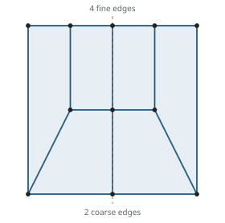
2 vertices per vertical edge · minimum corner mean ratio 0.381
Axial: complete through 28; cap 36 incomplete
Diagonal: complete through 36, no candidates
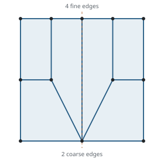
3 vertices per vertical edge · minimum corner mean ratio 0.381
No certified volume mesh in this collection.
Axial: complete through 36, no candidates
Diagonal: complete through 36, no candidates
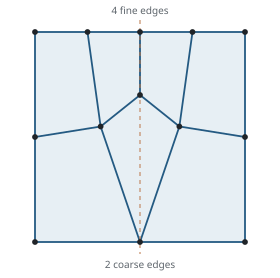
3 vertices per vertical edge · minimum corner mean ratio 0.611
No certified volume mesh in this collection.
Axial: complete through 28; cap 36 incomplete, no candidates
Diagonal: complete through 36, no candidates
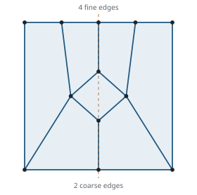
2 vertices per vertical edge · minimum corner mean ratio 0.464
No certified volume mesh in this collection.
Axial: complete through 28; cap 36 incomplete
Diagonal: complete through 36, no candidates
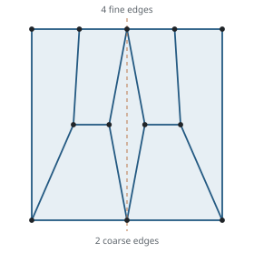
2 vertices per vertical edge · minimum corner mean ratio 0.337
No certified volume mesh in this collection.
Axial: complete through 28; cap 36 incomplete, no candidates
Diagonal: complete through 36, no candidates
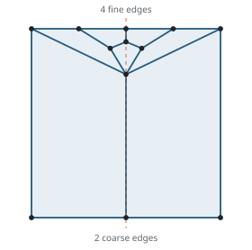
2 vertices per vertical edge · minimum corner mean ratio 0.292
Axial: complete through 36
Diagonal: complete through 36, no candidates
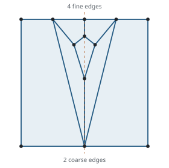
2 vertices per vertical edge · minimum corner mean ratio 0.198
No certified volume mesh in this collection.
Axial: complete through 36, no candidates
Diagonal: complete through 36, no candidates
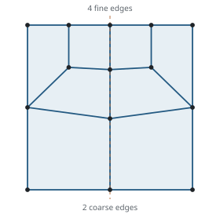
3 vertices per vertical edge · minimum corner mean ratio 0.673
Axial: complete through 32; cap 36 incomplete
Diagonal: complete through 36, no candidates
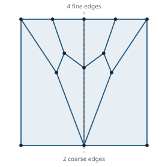
2 vertices per vertical edge · minimum corner mean ratio 0.218
No certified volume mesh in this collection.
Axial: complete through 36, no candidates
Diagonal: complete through 36, no candidates
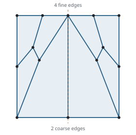
3 vertices per vertical edge · minimum corner mean ratio 0.197
No certified volume mesh in this collection.
Axial: complete through 36, no candidates
Diagonal: complete through 36, no candidates
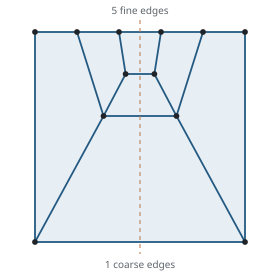
2 vertices per vertical edge · minimum corner mean ratio 0.385
37-cell mesh · 37-cell mesh · 37-cell mesh
Axial: complete through 37; cap 40 incomplete
Diagonal: complete through 40, no candidates
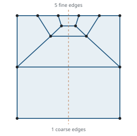
3 vertices per vertical edge · minimum corner mean ratio 0.490
38-cell mesh · 38-cell mesh · 38-cell mesh
Axial: complete through 38; cap 40 incomplete
Diagonal: no completed search; cap 40 incomplete, no candidates
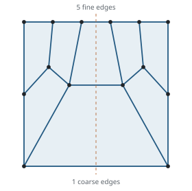
3 vertices per vertical edge · minimum corner mean ratio 0.472
No certified volume mesh in this collection.
Axial: no completed search; cap 40 incomplete, no candidates
Diagonal: complete through 40, no candidates
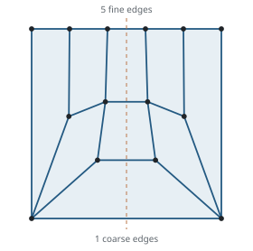
2 vertices per vertical edge · minimum corner mean ratio 0.295
No certified volume mesh in this collection.
Axial: no completed search; cap 40 incomplete, no candidates
Diagonal: complete through 40, no candidates
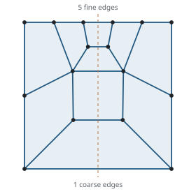
3 vertices per vertical edge · minimum corner mean ratio 0.546
No certified volume mesh in this collection.
Axial: no completed search; cap 40 incomplete, no candidates
Diagonal: no completed search; cap 40 incomplete, no candidates
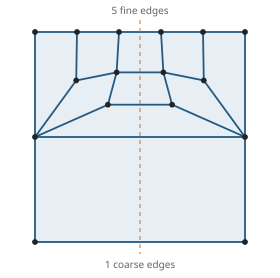
3 vertices per vertical edge · minimum corner mean ratio 0.269
No certified volume mesh in this collection.
Axial: no completed search; cap 40 incomplete, no candidates
Diagonal: no completed search; cap 40 incomplete, no candidates
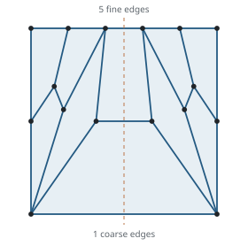
3 vertices per vertical edge · minimum corner mean ratio 0.170
No certified volume mesh in this collection.
Axial: no completed search; cap 40 incomplete, no candidates
Diagonal: complete through 40, no candidates
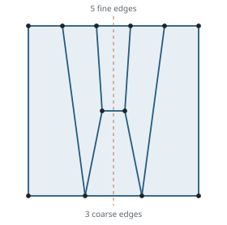
2 vertices per vertical edge · minimum corner mean ratio 0.261
Axial: complete through 36; cap 44 incomplete
Diagonal: complete through 36; cap 44 incomplete, no candidates
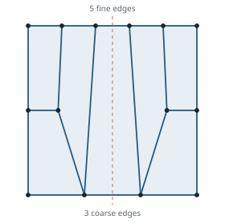
3 vertices per vertical edge · minimum corner mean ratio 0.295
No certified volume mesh in this collection.
Axial: complete through 36; cap 44 incomplete, no candidates
Diagonal: complete through 36; cap 44 incomplete, no candidates
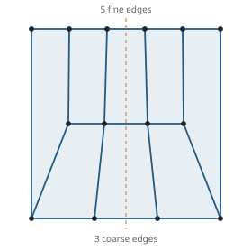
2 vertices per vertical edge · minimum corner mean ratio 0.303
No certified volume mesh in this collection.
Axial: no completed search; cap 44 incomplete, no candidates
Diagonal: complete through 36; cap 44 incomplete, no candidates
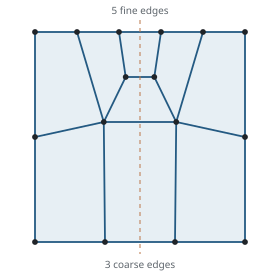
3 vertices per vertical edge · minimum corner mean ratio 0.561
No certified volume mesh in this collection.
Axial: complete through 36; cap 44 incomplete, no candidates
Diagonal: complete through 40; cap 44 incomplete, no candidates
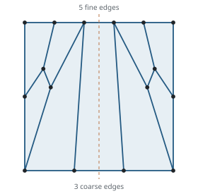
3 vertices per vertical edge · minimum corner mean ratio 0.170
No certified volume mesh in this collection.
Axial: complete through 36, no candidates
Diagonal: complete through 36, no candidates
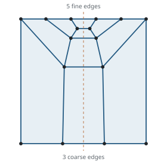
2 vertices per vertical edge · minimum corner mean ratio 0.499
No certified volume mesh in this collection.
Axial: complete through 36, no candidates
Diagonal: complete through 36, no candidates
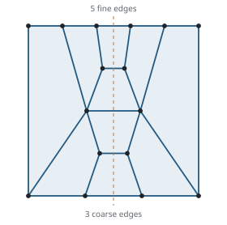
2 vertices per vertical edge · minimum corner mean ratio 0.385
No certified volume mesh in this collection.
Axial: complete through 36, no candidates
Diagonal: no completed search; cap 36 incomplete, no candidates
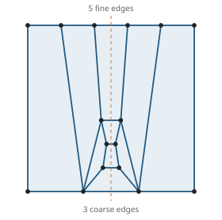
2 vertices per vertical edge · minimum corner mean ratio 0.269
No certified volume mesh in this collection.
Axial: complete through 36, no candidates
Diagonal: no completed search; cap 36 incomplete, no candidates
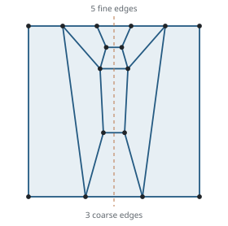
2 vertices per vertical edge · minimum corner mean ratio 0.264
No certified volume mesh in this collection.
Axial: complete through 36, no candidates
Diagonal: complete through 36, no candidates
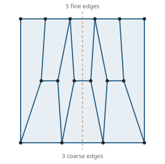
2 vertices per vertical edge · minimum corner mean ratio 0.252
No certified volume mesh in this collection.
Axial: no completed search; cap 36 incomplete, no candidates
Diagonal: complete through 36, no candidates
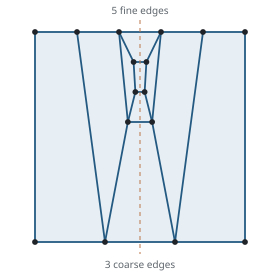
2 vertices per vertical edge · minimum corner mean ratio 0.206
No certified volume mesh in this collection.
Axial: complete through 36, no candidates
Diagonal: complete through 36, no candidates
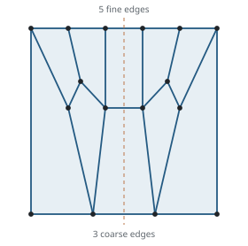
2 vertices per vertical edge · minimum corner mean ratio 0.201
No certified volume mesh in this collection.
Axial: complete through 36, no candidates
Diagonal: complete through 36, no candidates
THREADS=8 bash run-refinement.sh searches the 8 displayed boundaries at caps 13, 14, 28, 32, 33, 34, 37, 38, then runs HexOpt and exact validation for the cube and variable-height embeddings. It starts from the boundary alone. python3 tools/hexopt_refinement.py --threads 4 --output DIRECTORY runs the height comparison from the fixed-height assets. Optimized coordinates can differ between runs. See the repository README for output folders and optional settings.